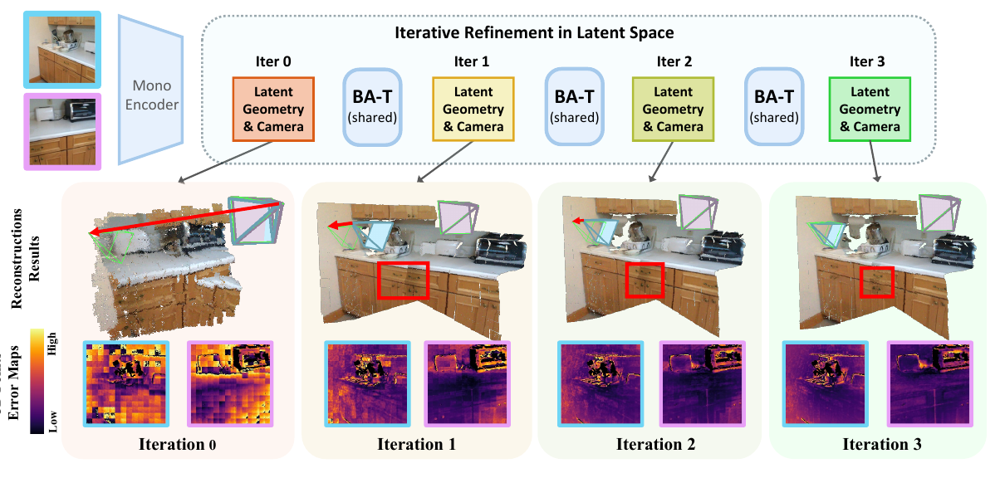
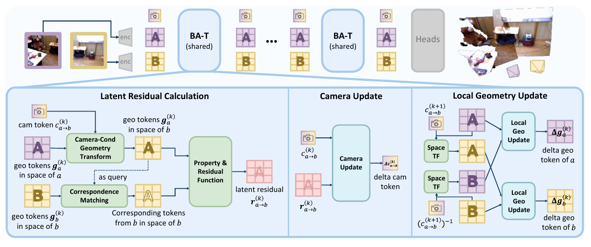
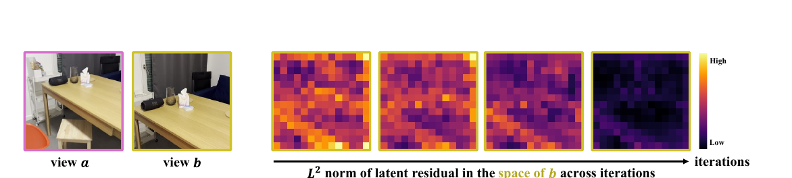
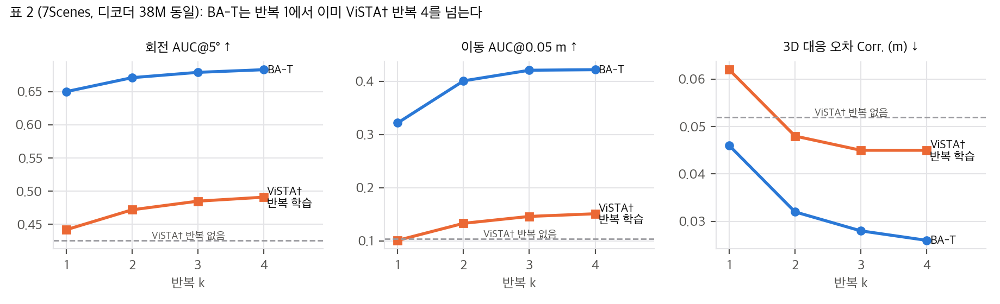
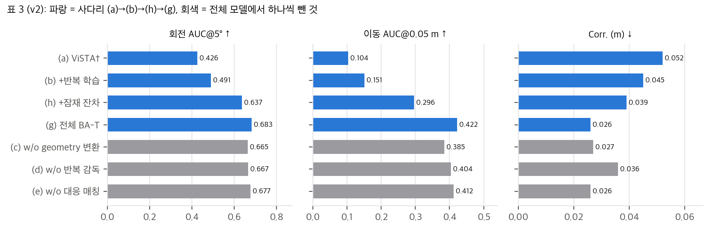
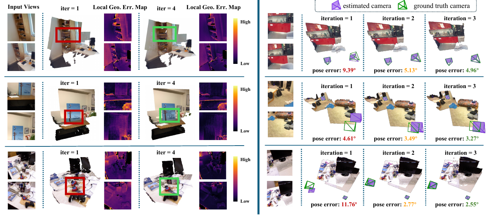
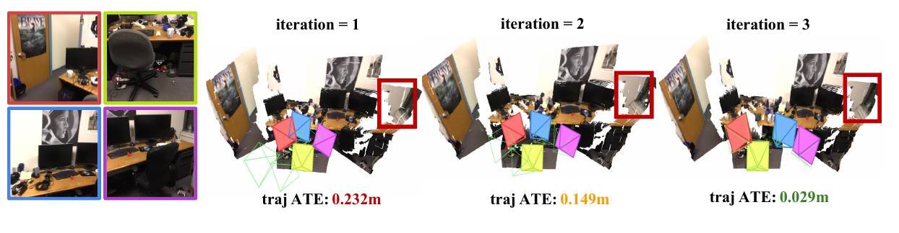
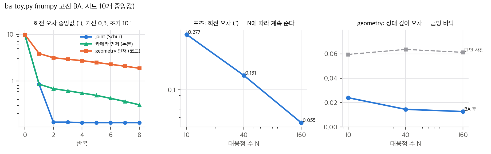

논문 Fig. 1: 공유 BA-T 층을 반복 적용하며 잠재 공간에서 카메라와 local geometry를 고친다. 화살표는 GT와 추정 포즈의 차이.

논문 Fig. 2: 잠재 잔차 계산(조건 변환 → 대응 매칭 → 성질·잔차 함수) → 카메라 갱신 → local geometry 갱신.
406d791, 2026-10-21, 추론 코드만) · 프로젝트 https://ganlinzhang.xyz/BA-T/ · 가중치 HF zhangganlin/BA-T (bat.pth, bat_paper.pth, 각 1.378 GB)04 §4).표 1, 2, 4, 5, 6의 숫자는 v1과 v2가 한 자리도 다르지 않습니다(두 판의 pdftotext 추출본에서 표 구간의 숫자를 순서대로 뽑아 기계적으로 비교). 바뀐 것은 해석과 기준선 설명입니다.
| 항목 | v1 (2026-06-02, 17쪽) | v2 (2026-10-20, 26쪽) |
|---|---|---|
| 표지 | "Preprint" | "NeurIPS 2026" |
| 크기 주장 (§1) | "DUSt3R 디코더 파라미터의 16%" | "디코더가 최대 6배 큰 2-view 모델과 같거나 낫고, 대형 multi-view 모델의 5–6% 예산으로 경쟁력". 초록은 여전히 "16%" |
| 표 3 (ablation) | leave-one-out 3행 + 전체 모델, 4행 | 사다리 7행: (a) ViSTA†, (b) ViSTA† w/ iterative training, (h) 최소 BA-T(잠재 잔차만), (g) 전체, (c)(d)(e) leave-one-out. §4.3에 비율 해석(25/15/27%, 76/54/75%, 68/46%) 추가 |
| 부록 B | 없음 | ViSTA† 기준선 정의(3층, "38M에 정확히 맞춤"), 손실 크기 보정(비반복 모델 손실 × Σα^{K−k}), 각 ablation 행 정의 |
| 부록 F.2 | 짧음 | "포즈가 geometry보다 잘 좋아지는 이유"에 초기화 비대칭 설명 추가(카메라 초기 토큰은 거의 항등 변환으로 디코딩됨을 확인) |
| 부록 H, 표 7 | 없음 | 한계(실내·정적·핀홀 데이터라 동적·실외·어안 일반화는 주장하지 않음), 학습 데이터 6종의 라이선스(모두 비상업) |
| NeurIPS 체크리스트 | 없음 | 있음. 코드 공개 [No]("채택 후 공개"), 오차 막대 [No] |
| 코드 링크 | "공개 예정" | GitHub 저장소 링크 |
해석: v2의 핵심 추가는 "반복 자체가 아니라 BA 구조가 기여한다"를 보이려는 표 3 사다리와 부록 B입니다. 심사 과정에서 "ViSTA†가 너무 약한 기준선 아닌가", "이득이 단순 반복에서 오는 것 아닌가"라는 질문을 받았을 것으로 보입니다(추정).
한 줄 요약: 고전 bundle adjustment(BA)의 정보 흐름(잔차 → 카메라 갱신 → geometry 갱신)을 잠재 토큰 공간의 Transformer 층 하나로 흉내 내고, 이 층을 K번 반복 적용해 두 이미지의 상대 포즈와 시점별 point map을 고칩니다. 깊게 쌓은 cross-attention 디코더(DUSt3R 227M, VGGT 605M) 대신 38M짜리 층 하나를 재사용합니다.
논문이 내세우는 기여는 세 가지입니다(§1).
이미지 I_a, I_b (코드 기준 224×224)
│ ViT-L 인코더(24층, 1024차원, ViSTA 사전학습) → 시점당 토큰 N개 (코드: 14×14 = 196)
▼
g_a^(0), g_b^(0) = Linear(1024→768)(인코더 특징) c_{a→b}^(0) = 학습되는 공유 토큰 1개 (D = 768)
│
│ BA-T 층 F_θ (가중치 공유) 를 k = 0 … K−1 반복: T^(k+1) = T^(k) + F_θ(T^(k)) (식 4)
│ ① 잔차: g̃_a = π_{c_{a→b}}(g_a) (adaLN 조건 블록)
│ g_b^q = Σ_i α_i g_b^i, α = AttnScore(g̃_a, g_b) (식 5)
│ r_{a→b} = MLP( proj(g_b^q) − proj(g̃_a) ) → 잔차 토큰 N개 (식 6–7)
│ ② 카메라: Δc = CrossAttn(c, r_{a→b}) (카메라 토큰 1개가 잔차 N개에 질의) (식 8)
│ ③ geometry: Δg_a = CrossAttn(g_a, π_{c_{b→a}^(k+1)}(g_b)), Δg_b도 대칭 (식 9)
│ c_{b→a}는 c_{a→b}에 작은 MLP를 씌워 얻음 (부록 C)
▼
헤드: point map(시점마다 자기 좌표계, 신뢰도 포함), 상대 포즈 (회전 9 + 이동 3 + 신뢰도)
학습: 매 반복 출력에 손실, Σ_k α_λ^{K−k} L^(k), α_λ = 0.8, K = 5 (식 11, 부록 A)
식 1은 두 시점 BA의 일반형입니다. 시점 a의 local geometry g_a^p를 상대 카메라 c로 시점 b에 옮기고(π_c), 성질 f(예: 2D 투영)를 b의 대응 측정과 잔차 r로 비교해 합을 최소화합니다. Gauss-Newton 정규방정식(식 2)을 카메라 블록 B, 결합 블록 E, geometry 블록 C로 나누면 Schur 보완(식 3)으로 풀 수 있습니다.
Δc = (B − E C⁻¹ Eᵀ)⁻¹ (v − E C⁻¹ w), Δg = C⁻¹ (w − Eᵀ Δc)
논문은 이 식에서 "잔차를 먼저 계산하고, 카메라 갱신이 결합된 잔차 정보를 모으고, 그 카메라 변화로 geometry를 고친다"는 순서만 가져옵니다. 야코비안, 정규방정식, 행렬 역은 쓰지 않습니다. 이 구조가 "BA 풀이기를 흉내 낸다"가 아니라 "BA의 정보 흐름 경로를 아키텍처의 연결 구조로 고정한다"는 점이 핵심입니다. 03 §1에서 C가 블록 대각이라 Schur 보완이 "점마다 geometry로 설명되지 않는 잔차 성분의 합"이 된다는 점을 유도하고, numpy로 확인했습니다.
| 고전 BA 요소 | BA-T 구현 | 출처 |
|---|---|---|
| 공간 변환 π_c | DiT식 adaLN 조건 블록. 카메라 토큰이 shift·scale을 만듦 | §3.3, 부록 A, Fig. 9 |
| 대응점 찾기 | 변환된 토큰으로 상대 시점 토큰에 cross-attention, 가중합이 대응 토큰(soft matching, 8 heads) | 식 5, Fig. 3 |
| 성질 f, 잔차 r | 선형 투영 후 차이에 MLP | 식 6–7, Fig. 4 |
| 카메라 갱신(Schur) | 카메라 토큰 1개가 잔차 토큰 N개에 cross-attention (12 heads + MLP) | 식 8 |
| geometry 갱신(역대입) | 갱신된 카메라로 상대 시점을 옮긴 뒤 시점 간 cross-attention, 이어 시점 내 self-attention 3개 | 식 9, 부록 A |
| 역방향 카메라 | c_{a→b}에 MLP를 씌워 c_{b→a}를 얻음(토큰을 둘 두지 않음) | 부록 C |
공개 코드와 다른 점이 많습니다. 코드에서는 한 층 안의 순서가 geometry 먼저 → 카메라이고(논문은 카메라 먼저), 잔차를 b가 아니라 a 공간에서 계산하며, self-attention 3개에 MLP가 없고, 갱신이 순수 덧셈이 아니라 LayerNorm을 거칩니다. "38M"은 이렇게 MLP가 빠진 코드 기준으로만 맞습니다(04 D1–D5, 03 §2).

논문 Fig. 4: view b 공간에서 계산한 잠재 잔차의 L2 노름이 반복할수록 줄어든다(코드는 a 공간에서 계산, 04 D2).
table_check.py E).view graph의 간선마다 카메라 토큰을 하나씩 두고, 잔차와 카메라 갱신은 간선별로, geometry 갱신은 시점마다 "이웃 전체를 자기 공간으로 옮겨 이어 붙인 토큰"에 cross-attention합니다. 구조 변경 없이 같은 층을 씁니다. 표 6은 4개 시점의 완전 그래프로 평가했습니다.
평가는 7Scenes 3,600쌍과 BundleFusion 1,109쌍입니다. 포즈 AUC는 max(회전 오차, 이동 방향 각 오차) 기준입니다.
| 7Scenes | AUC@5/10/20 | Chamf. | δ1.25 | 디코더 |
|---|---|---|---|---|
| DA3 | 0.22 / 0.43 / 0.64 | 0.08 | 0.98 | 765M |
| VGGT | 0.19 / 0.39 / 0.60 | 0.10 | 0.97 | 605M |
| MASt3R | 0.15 / 0.32 / 0.52 | 0.16 | 0.79 | 227M |
| ViSTA | 0.13 / 0.33 / 0.56 | 0.10 | 0.98 | 113M |
| ViSTA† (3층) | 0.01 / 0.06 / 0.17 | 0.15 | 0.94 | 38M |
| BA-T (K=4) | 0.16 / 0.37 / 0.59 | 0.11 | 0.98 | 38M |
table_check.py A). "competitive"는 맞지만 "능가"는 아닙니다.| 7Scenes (회전 AUC@5 / 이동 AUC@0.05m / Corr. m / Rel.) | k=1 | k=2 | k=3 | k=4 |
|---|---|---|---|---|
| ViSTA† w/ iterative training | 0.442 / 0.101 / 0.062 / 0.061 | 0.472 / 0.133 / 0.048 / 0.060 | 0.485 / 0.146 / 0.045 / 0.060 | 0.491 / 0.151 / 0.045 / 0.060 |
| BA-T | 0.650 / 0.322 / 0.046 / 0.051 | 0.671 / 0.401 / 0.032 / 0.050 | 0.679 / 0.421 / 0.028 / 0.049 | 0.683 / 0.422 / 0.026 / 0.048 |

우리 분석: 표 2를 다시 그림. BA-T는 반복 1에서 이미 ViSTA† 반복 4를 넘는다. 점선은 반복 없는 ViSTA†(표 3 (a)).
| 설정 (모두 디코더 38M, 같은 인코더·데이터·스텝·손실) | 회전 AUC@5 | 이동 AUC@0.05 | Corr. |
|---|---|---|---|
| (a) ViSTA† (반복 없음) | 0.426 | 0.104 | 0.052 |
| (b) + 반복 학습 | 0.491 | 0.151 | 0.045 |
| (h) + 잠재 잔차 (최소 BA-T: 같은 2D 위치 토큰끼리 차이만) | 0.637 | 0.296 | 0.039 |
| (g) 전체 BA-T | 0.683 | 0.422 | 0.026 |
| (c) w/o geometry 변환 | 0.665 | 0.385 | 0.027 |
| (d) w/o 반복 감독 | 0.667 | 0.404 | 0.036 |
| (e) w/o 대응 매칭 | 0.677 | 0.412 | 0.026 |
본문의 비율 9개(25/15/27%, 76/54/75%, 68/46%)는 모두 표에서 다시 계산한 값과 맞습니다(04 C1). 다만 어떤 지표를 고르느냐에 따라 비율이 크게 달라집니다. (b)→(h)가 (b)→(g) 이득에서 차지하는 몫은 회전 76–80%, 이동 54–69%, Rel. 75%, δ1.05 58%, δ1.25 38%, Corr. 32%입니다. 논문은 "잠재 잔차가 지배적 요인"을 회전·이동·Rel.로 보이고, Corr.는 나머지 구성 요소의 몫(68%)으로 설명합니다. 둘 다 맞는 서술이지만, 시점 간 일관성(Corr.)만 보면 대응 매칭과 geometry 변환이 더 큰 몫을 합니다.
leave-one-out에서 하나를 뺐을 때 떨어지는 폭은 회전 AUC@5 기준 0.006–0.018로 작습니다. (d) w/o 반복 감독은 δ1.05가 오히려 전체 모델보다 높습니다(0.620 vs 0.601). 시드 하나, 오차 막대 없음(체크리스트 Q7 [No])이라 이 정도 차이가 유의한지는 알 수 없습니다.

우리 분석: 표 3을 다시 그림. 파랑은 사다리 (a)→(b)→(h)→(g), 회색은 전체 모델에서 하나씩 뺀 것.
같은 초기값(BA-T 반복 0의 출력)에서 DROID-SLAM의 BA(재투영 잔차, Gauss-Newton, GT 내부 파라미터 제공, 20회)와 BA-T(4회)를 비교했습니다. BA-T가 회전 AUC@5 0.68 vs 0.53, 이동 0.42 vs 0.08, δ1.25 0.98 vs 0.36이고, 시간은 5.2배 빠르며 메모리는 44.4% 적습니다(본문 "약 5배, 약 45%"와 맞음).
04 C8).
논문 Fig. 6: 반복 1과 4의 복원과 점 오차 지도(왼쪽), 반복별 상대 포즈(오른쪽).
| DROID | VGGT | DA3 | MapAny | MASt3R | DUSt3R | ViSTA | BA-T k=1/2/3/4 | |
|---|---|---|---|---|---|---|---|---|
| 시간 (ms) | 160.93 | 128.71 | 78.14 | 41.13 | 93.25 | 66.47 | 37.96 | 21.40 / 24.65 / 28.32 / 30.92 |
| 최대 메모리 (GB) | 2.43 | 4.93 | 6.52 | 3.23 | 2.72 | 2.02 | 1.76 | 1.32 |
03 §5).04 C11).BundleFusion 4-view 547개에서 BA-T는 이동 0.09 m, 회전 16.39°, Rel. 0.20, δ1.25 0.70입니다. MapAnything(0.14, 29.65°, 0.36, 0.30)보다 네 지표 모두 좋고, VGGT(0.06, 10.72°, 0.15, 0.79)보다 네 지표 모두 나쁩니다. 대신 VGGT보다 4.5배 빠르고 메모리는 26%입니다. 캡션의 "comparable accuracy"는 VGGT 기준으로는 너그러운 표현입니다.

논문 Fig. 7: 4-view 입력에서 반복별 포즈와 장면. 궤적 ATE 0.232 m → 0.029 m.
04 D1–D5). 부록 A대로 만들면 층이 52.6–56.1M이 되어 "38M"이 성립하지 않습니다. 논문의 BA 비유를 읽고 재구현하면 공개 체크포인트와 다른 모델이 됩니다.03 §5).03 §2). 층 수가 4였거나 층 밖의 모듈이 약 10M 있어야 합니다.04 D12).02 §3).BA-T의 기여는 "BA를 풀지 않고 BA의 정보 흐름을 아키텍처로 고정하면 작은 층 하나를 반복해 깊은 디코더를 대신할 수 있다"는 실증입니다. 표 3의 (b)→(h)는 같은 예산, 같은 반복 학습에서 명시적 잠재 잔차 하나만으로 회전 AUC@5가 0.491에서 0.637로 오른다는 깔끔한 증거입니다. 반면 크기와 효율 주장은 디코더만 세는 관행에 기대고 있고, 논문의 BA 비유(카메라 먼저 갱신, b 공간 잔차, 덧셈 갱신)는 공개 코드와 세부가 다릅니다. 이 논문에서 가져갈 것은 특정 수치보다 "반복 정제 층에 명시적 잔차 토큰을 두라"는 설계 원칙입니다.
검증 스크립트는 모두 CPU, numpy, 단일 스레드이고 몇 초 안에 끝납니다.
| 스크립트 | 내용 | 결과 |
|---|---|---|
ba_toy.py |
두 시점 BA toy: Schur = 전체 해(T1), 갱신 순서 비교(T2, T2b), 대응점 수에 따른 포즈·깊이 오차(T3) | ba_toy_results.json |
param_check.py |
공식 코드 모듈 정의로 파라미터 수와 연산량을 손으로 셈(P1–P5) | param_check_results.json |
table_check.py |
표 1–6, 식 11 가중치 재계산(A–E) | table_check_results.json |
두 시점 BA에서 점 i의 geometry 변수 g_i(toy에서는 역깊이 ρ_i 하나)는 자기 잔차에만 들어갑니다. 그래서 식 2의 C = J_gᵀJ_g가 블록 대각이고, Schur 보완을 점별 합으로 쓸 수 있습니다.
S = B − E C⁻¹ Eᵀ = Σ_i J_c,iᵀ ( I − J_g,i (J_g,iᵀ J_g,i)⁻¹ J_g,iᵀ ) J_c,i = Σ_i J_c,iᵀ P_i⊥ J_c,i
v − E C⁻¹ w = − Σ_i J_c,iᵀ P_i⊥ r_i
P_i⊥는 "점 i의 깊이를 움직여서 설명할 수 있는 방향"을 지우는 사영입니다. 즉 카메라 갱신은 각 점이 자기 geometry로 흡수하지 못하는 잔차 성분만 모아서 정해지고, 그다음 역대입 Δg = C⁻¹(w − EᵀΔc)로 점마다 독립적으로 geometry를 고칩니다. 논문이 식 3에서 읽어 낸 "잔차 → 카메라(모음) → geometry(개별)"의 흐름이 이것입니다.
toy 확인 (T1, N = 60): 식 3으로 푼 (Δc, Δg)와 전체 정규방정식 해의 최대 차이는 1.4×10⁻¹⁴이고, C의 비대각 성분은 정확히 0입니다. 그래서 C⁻¹은 O(N)이고 S는 6×6입니다.
BA-T와의 대응과 차이 (내 해석):
param_check.py는 torch 없이 공식 코드(406d791)의 Linear·LayerNorm 크기를 더합니다. 전체 344.4M × 4바이트 = 1.378 GB가 HF 체크포인트 파일 크기(1.378 GB, bat.pth·bat_paper.pth 모두)와 일치하므로, 이 셈이 맞다고 볼 수 있습니다.
| 구성 (D = 768) | 파라미터 (M) |
|---|---|
| token_transform (adaLN 조건 블록: ModLN 2개 + self-attn + MLP) | 9.45 |
| self-attention 3개 (LN + attn, MLP 없음) | 7.09 |
| geometry cross-attention 층 (MLP 포함) | 7.09 |
| camera cross-attention 층 (MLP 포함) | 7.09 |
| camera_inverse MLP (부록 C) | 4.72 |
| token_corr_res (매칭 + 잔차 MLP, 확장비 1) | 2.96 |
| BundleAdjustmentLayer 합 | 38.40 |
| 주변: appearance_embed 0.79 + point map 헤드 0.79 + 포즈 헤드 0.93 + 초기 토큰 | 2.50 |
| 추론에 안 쓰는 CameraTokenEncoder | 0.43 |
| ViT-L 인코더 (24층, 1024) | 303.1 |
| 전체 | 344.4 |
04 D3, D4).논문(§3.3, 알고리즘 1)은 Schur 순서대로 카메라 먼저, 그다음 갱신된 카메라로 geometry라고 씁니다. 공개 코드(BundleAdjustmentLayer.forward)는 geometry 먼저(이전 카메라 토큰으로 변환), 그다음 새 geometry의 잔차로 카메라입니다(04 D1). 학습된 층에서 이 차이가 무엇을 뜻하는지는 직접 확인할 수 없으므로, 고전 BA에서 세 가지 갱신 방식을 비교했습니다.
설정: 시점 a의 광선 방향 f_i(고정)와 역깊이 ρ_i(geometry), 상대 포즈 (R, t)(카메라). 잔차는 시점 b 재투영 오차 2N개(1 px 잡음, 초점거리 500)와 단안 깊이 사전 w·(ρ_i − ρ̂_i) N개(사전 잡음 10%, w = 0.05)입니다. 깊이 사전은 스케일을 고정하고, 인코더의 단안 geometry 사전(부록 F.2) 역할을 합니다. N = 40, 시드 10개 중앙값.
| 기선 / 초기 회전 오차 | 방식 | 회전 오차 중앙값(°) 반복 1 / 2 / 4 | 0.2° 도달 비율 |
|---|---|---|---|
| 0.05 / 3° | joint | 0.114 / 0.092 / 0.088 | 1.0 |
| 카메라 먼저 | 0.133 / 0.107 / 0.087 | 1.0 | |
| geometry 먼저 | 0.587 / 0.212 / 0.115 | 1.0 | |
| 0.3 / 3° | joint | 0.183 / 0.130 / 0.129 | 0.9 |
| 카메라 먼저 | 0.600 / 0.530 / 0.422 | 0.0 | |
| geometry 먼저 | 1.383 / 0.835 / 0.590 | 0.2 | |
| 0.3 / 10° | joint | 0.859 / 0.132 / 0.129 | 0.9 |
| 카메라 먼저 | 0.859 / 0.688 / 0.554 | 0.3 (8회 안) | |
| geometry 먼저 | 3.895 / 3.165 / 2.738 | 0.0 |
(기선 0.05 / 초기 10°도 같은 경향이라 표에서 뺐습니다. 전체는 JSON에 있습니다.)
관찰:
BA-T에 주는 함의 (내 해석, 미검증): 부록 F.2는 카메라 초기 토큰이 "거의 항등 변환으로 디코딩된다"고 했습니다. 코드 순서에서는 첫 geometry 갱신이 이 항등 근처 카메라로 이웃 시점을 변환합니다. 고전 BA 직관으로는 불리한 순서입니다. 하지만 학습된 층은 이 순서를 전제로 학습되었고, 첫 geometry 갱신이 "카메라 정보 없이 하는 시점 간 교차 attention"으로 쓰일 수도 있습니다. 순서의 영향은 같은 데이터로 두 순서를 각각 학습해야만 알 수 있습니다. 공개 체크포인트에서 순서만 바꿔 돌리는 것은 학습 분포 밖이라 의미가 없습니다.

우리 분석(ba_toy.py): 왼쪽은 갱신 방식별 회전 오차(기선 0.3, 초기 10°), 가운데·오른쪽은 대응점 수에 따른 포즈·깊이 오차.
부록 F.2는 두 가지 이유를 듭니다. 잔차가 카메라 갱신에 직접 들어간다는 것, geometry는 인코더 사전 덕분에 처음부터 좋다는 것입니다. 고전 BA에서 가장 단순한 형태는 변수당 관측 수입니다. 카메라는 6개 변수에 2N개 잔차가 모이고, 점마다의 깊이는 1개 변수에 잔차 2개 + 사전 1개뿐입니다.
| N | 회전 오차 중앙값(°) | 상대 깊이 오차 중앙값 | 단안 사전의 오차 |
|---|---|---|---|
| 10 | 0.277 | 0.024 | 0.060 |
| 40 | 0.131 | 0.015 | 0.064 |
| 160 | 0.055 | 0.013 | 0.061 |
| 비 (N10 / N160) | 5.1배 (√16 = 4) | 1.9배 | – |
포즈 오차는 N에 따라 대략 1/√N보다 조금 빠르게 줄고, 깊이 오차는 N이 늘어도 바닥(약 1.3%)에서 멈춥니다. 깊이의 바닥은 카메라 오차가 0이 되어도 남는 "점마다 재투영 2개"의 정밀도 한계입니다. BA-T 표 2에서도 반복 1→4 동안 이동 AUC는 +0.100, Corr.는 −44%로 크게 좋아지지만 Rel.은 −5.9%, δ1.25는 +0.004뿐입니다. 고전 BA의 이 구조적 비대칭은 F.2의 설명과 같은 방향이고, 학습 모델에서도 그대로 나타난다고 볼 수 있습니다(인과는 미검증).
시점별 토큰 수는 코드에서 196개(224×224, 패치 16)로 고정이라, 해상도를 올리면 카메라 쪽 "N"이 커집니다. 해상도와 포즈 정밀도의 관계는 실험되지 않았습니다.
연산량 추정 (param_check.py P5, 224×224 한 쌍, 선형층 2·파라미터·토큰 + attention 4·Nq·Nk·D, softmax·LN 제외. 측정이 아니라 추정입니다):
| 부분 | GFLOP |
|---|---|
| ViT-L 인코더 (두 시점) | 245.2 |
| BA 층 1회 | 25.3 |
| └ 조건 변환 3회(이웃 2 + 잔차 1) | 11.5 (45%) |
| └ self-attention 3개 × 두 시점 | 6.3 |
| └ geometry cross-attention × 두 시점 | 5.8 |
| └ 매칭·잔차 / 카메라 갱신 | 1.3 / 0.5 |
| 헤드·입력 투영 | 1.2 |
| 합: K = 4 / K = 8 | 347.5 / 448.7 |
04 §4).table_check.py)| 항목 | 결과 |
|---|---|
| 표 3 비율 9개 (§4.3) | 모두 일치: 25.3/14.8/26.9%, 76.0/53.5/75.0%, 68.4/46.5% |
| (b)→(h) 몫을 지표별로 | 회전 76–80%, 이동 54–69%, Rel. 75%, δ1.05 58%, δ1.25 38%, Corr. 32% |
| 표 2 Corr. 감소 | ViSTA† 27.4%, BA-T 43.5% (본문 27%, 44%) |
| 표 2 반복 1의 몫 | BA-T k=4의 ViSTA† k=4 대비 우위 가운데 회전 83%, 이동 63%가 k=1에 이미 있음 |
| 표 3 (a)(b)(g) = 표 2 | 세 행 모두 표 2의 해당 행과 같음 |
| 표 4 | 5.2배 빠름, 메모리 44.4% 절감. Rel. 0.20 ≠ 표 2의 0.048 |
| 표 5 | 반복당 3.22 ms, 기저 18.26 ms. BA-T k=4(30.92)가 가장 빠른 다른 모델 ViSTA(37.96)보다 빠름 |
| 표 6 | VGGT가 BA-T보다 네 정확도 지표 모두 좋음. BA-T는 MapAnything보다 네 지표 모두 좋음. 메모리 39.5%(본문 39%) |
| 식 11 | 가중치 0.41/0.51/0.64/0.80/1.00, 합 3.36(= 부록 B의 비반복 기준선 손실 배수), 마지막 반복 몫 29.7% |
zhangganlin/BA-T @ 406d791d21d7ae60ad58b0d2a8892735709ac83f (2026-10-21, "ba-t codebase init", shallow clone). HF zhangganlin/BA-T 메타데이터(커밋 ac53e30, 2026-10-22)는 API로만 확인했고 가중치는 받지 않았습니다.| 논문 | 구현 위치 | 일치 여부 |
|---|---|---|
| ViT 인코더, ViSTA 사전학습 (부록 A) | bat_model.py: BAT — ViT-L 24층, 1024차원, 16 heads, 패치 16, RoPE2D(base 100) |
✅ 해상도는 논문에 없고 코드는 224×224 (D7) |
| 토큰 차원 D = 768 | dec_embed_dim=768, appearance_embed: Linear(1024→768) |
✅ |
| 학습되는 초기 카메라 토큰 (§3.2) | init_pose_token (1×1×768), 간선마다 복제 |
✅ |
| 층 하나를 K번 공유 반복 (식 4) | decode()의 for k in range(num_refine_iter): self.ba_layer(...) |
✅ 기본 K는 다름 (D6) |
| 카메라 조건 변환 π_c, adaLN (§3.3, 부록 A) | ConditionModulationBlock (ModLN = LN + SiLU + Linear(768→1536)이 shift·scale 생성, 내부에 self-attn + MLP) |
✅ |
| soft 대응 매칭 8 heads (식 5, 부록 A) | TokenCorrRes(num_heads=8): q·k attention으로 상대 시점 v의 가중합 |
✅ 좌표계 방향은 D2 |
| 성질 f = 선형 투영, 잔차 = 차이의 MLP (식 6–7) | TokenCorrRes: 두 시점에 같은 projv, LN(v_a) − LN(attn·v_b) → Linear-GELU-Linear |
⚠️ 확장비 1 (D4), 부호·방향 (D2) |
| 카메라 갱신: 카메라 토큰 → 잔차 N개 cross-attention, 12 heads + MLP (식 8) | camera_attn = CrossAttnLayer(12 heads, use_mlp=True) |
✅ 순서 (D1), 덧셈 아님 (D5) |
| geometry 갱신: 시점 간 cross-attention, 12 heads + MLP (식 9) | cross_attn_layers[0] (이웃을 _transform으로 자기 공간에 옮긴 뒤) |
✅ 이전 카메라 사용 (D1) |
| 시점 내 self-attention 3개, 각각 MLP (부록 A) | attn, attn2, attn3 직렬, MLP 없음 |
❌ (D3) |
| 역방향 카메라 = 작은 MLP (부록 C) | camera_inverse = Mlp(768→3072→768). 포즈 헤드도 pose_ji = head(camera_inverse(t)) |
✅ 두 방향 포즈를 따로 예측해 근사적으로만 역행렬 관계 (README도 명시) |
| 헤드: point map(시점별 좌표계) + 상대 포즈 | LinearPts3d(DUSt3R 선형 헤드, 3+신뢰도), PoseHead_small(768→512×3, 회전 9D·이동 3·신뢰도 sigmoid) |
✅ |
| 반복마다 디코딩 (식 11의 전제) | decode(all_iters=True)가 반복마다 헤드 실행 |
✅ 손실 코드는 없음 (D12) |
| 다시점: 간선마다 카메라 토큰, 시점마다 이웃 전체에 cross-attention (부록 G, 알고리즘 2) | forward(gs, poss, ts, graph): others[v]에 이웃 토큰을 변환해 이어 붙임, 잔차·카메라는 간선별 배치 |
✅ 그래프 생성·PGO는 코드에만 (D11) |
| 디코더 38M (표 1, 5) | BundleAdjustmentLayer 38.40M (param_check.py) |
✅ 코드 기준. 부록 A 서술로는 52.6–56.1M (D3, D4) |
| # | 내용 | 영향 |
|---|---|---|
| D1 | 한 층 안의 갱신 순서가 논문과 반대입니다. 논문(§3.3 "we update the camera token first", 식 8–9, 알고리즘 1)은 c^(k+1) = c^(k) + CrossAttn(c^(k), r(g^(k), c^(k)))를 먼저 하고, 갱신된 c^(k+1)로 geometry를 고칩니다. 코드(ba_blocks.py: BundleAdjustmentLayer.forward)는 먼저 ts_inv = camera_inverse(ts)를 이전 카메라 토큰으로 만들고, 이웃 시점을 그것으로 변환해 geometry를 갱신합니다. 그다음 새 geometry와 같은 ts_inv로 잔차를 만들어 카메라를 갱신합니다. 반복을 펼치면 논문은 C G C G …, 코드는 G C G C …입니다. 코드는 첫 geometry 갱신을 초기 토큰(F.2에 따르면 거의 항등 변환)으로 하고, 마지막 카메라 갱신 뒤에는 geometry 갱신이 없습니다. |
논문의 "Schur 순서를 따른다"는 핵심 비유가 공개 구현과 맞지 않습니다. 공개 체크포인트를 쓰려면 코드 순서를 따라야 합니다. 고전 BA toy에서는 순서가 고정점을 바꾸지 않지만 수렴 속도는 크게 바뀝니다(03 §3). 학습 모델에서의 영향은 측정되지 않았습니다. |
| D2 | 잔차를 계산하는 좌표계가 반대입니다. 논문(식 5–7, Fig. 4 "Residuals are computed in the latent space of view b", 알고리즘 1)은 g_a를 c_{a→b}로 b 공간에 옮겨 질의로 쓰고 g_b와 매칭합니다. 코드는 token_corr_res(gs_new[i], _transform(gs_new[j], ts_inv[e]))로 변환하지 않은 g_a가 질의, camera_inverse로 a 공간에 옮긴 g_b가 key·value입니다. 잔차도 f(a) − f(매칭된 b)라 부호가 논문(f(b^q) − f(π(a)))과 반대입니다. |
학습되는 함수라 부호는 의미가 없고, 방향도 대칭이라 성능 차이는 작을 것으로 봅니다. 하지만 Fig. 4의 해석("b 공간 잔차")과 실제 연산이 다르고, 카메라 토큰 자체가 아니라 camera_inverse 출력이 잔차에 들어갑니다. |
| D3 | 시점 내 self-attention 3개에 MLP가 없고, 층 사이 잔차 연결도 없습니다. 부록 A는 "three intra-view self-attention layers (each with 12 heads and a 2-layer MLP with expansion ratio 4)"라고 씁니다. 코드는 g_self = attn3(LN(attn2(LN(attn(LN(g_update))))))로 attention만 직렬로 잇고, 마지막에 geo_norm(g_update + g_self + g)로 한 번만 더합니다. |
MLP가 있었다면 층이 52.6M입니다. "38M"은 코드 구조로만 성립합니다(03 §2). 부록 A대로 재구현하면 체크포인트를 읽을 수 없고 크기 비교도 달라집니다. |
| D4 | 잔차 MLP의 확장비가 4가 아니라 1입니다. 부록 A "2-layer MLP with expansion ratio 4". 코드 TokenCorrRes.proj = Linear(768,768) – GELU – Linear(768,768). |
D3과 합치면 부록 A 서술의 층은 56.1M입니다. 주석 처리된 코드(torch.cat([va, va_in_b, (va - va_in_b).abs()]))를 보면 잔차 형태를 여러 번 바꿔 본 흔적이 있습니다. |
| D5 | 갱신이 순수 덧셈이 아닙니다. 식 4는 T^(k+1) = T^(k) + ΔT입니다. 코드는 g^(k+1) = LN(g + g_update + g_self), c^(k+1) = LN(c + Δc)로 덧셈 뒤 LayerNorm(post-LN)을 합니다. 또 CrossAttnLayer에서 MLP 주변 잔차 연결이 주석 처리되어(# x = x + self.drop_path(self.mlp(...))), 출력이 MLP(LN(x + CrossAttn)) 그 자체입니다. |
토큰 노름이 매 반복 정규화됩니다. README에 따르면 공개 가중치는 4–24회 반복으로 학습되었는데, 반복을 늘려도 발산하지 않는 데 이 정규화가 기여할 것으로 봅니다(추정). 논문에는 없는 설계입니다. |
| D6 | 기본 반복 수와 기본 체크포인트가 논문과 다릅니다. 논문은 학습 K = 5, 평가 K = 4입니다. 코드 decode(), forward(), demo.py의 기본값은 num_refine_iter=8입니다. 기본 체크포인트 bat.pth는 README에 따르면 "논문 모델을 더 많은 반복(4–24)과 다시점 그래프(2–8개 시점)로 추가 미세조정"한 것이고, 논문 수치는 bat_paper.pth입니다. |
README 기본 설정으로 돌린 결과를 논문 표와 비교하면 안 됩니다. 논문 재현에는 --ckpt pretrains/bat_paper.pth --num_refine_iter 4가 필요합니다. |
| D7 | 입력 해상도가 논문에 없습니다. 코드는 224×224, 패치 16이라 시점당 토큰 196개이고, 전처리는 중심 크롭 + Lanczos 축소 + 중심 크롭입니다(data.py). 주점은 이미지 중심으로 가정합니다. |
표 5의 "same input images with the same resolution"이 모든 비교 모델을 224로 돌렸다는 뜻인지 알 수 없습니다. VGGT(518) 등은 기본 해상도가 더 높습니다. |
| D8 | 인코더 출력에 enc_norm을 적용하지 않습니다(코드 주석 "this is how the model was trained"). enc_norm은 체크포인트 호환을 위해 남겨 둔 미사용 모듈입니다. |
재구현할 때 흔히 넣는 최종 LN을 넣으면 공개 가중치와 맞지 않습니다. |
| D9 | 카메라 갱신 cross-attention에서 카메라 토큰에 RoPE 위치 (−1, −1)을 줍니다(cam_pos = -torch.ones(...)). 잔차 토큰은 view a의 패치 위치를 씁니다. |
논문에 없는 세부입니다. 카메라 토큰이 모든 패치에서 "격자 밖 한 점"으로 보이게 하는 장치입니다. |
| D10 | 알려진 포즈(회전 벡터, 이동, 초점거리, Fourier 특징)를 카메라 토큰으로 바꾸는 CameraTokenEncoder(0.43M)가 체크포인트에 들어 있지만 추론에는 쓰지 않습니다. |
논문에 언급이 없습니다. 학습 중 알려진 포즈를 넣는 변형(포즈 조건 복원)을 시도했을 가능성이 있습니다(추정). |
| D11 | 다시점 경로가 논문보다 많습니다. 코드는 ① 인코더 특징의 상호 최근접 패치 비율로 view graph를 자동 생성(graph.py: 유사도 ≥ 0.3, 이웃 최대 7개, 최대 신장 트리 추가)하고, ② 간선별 포즈 신뢰도로 간선을 고른 뒤 신뢰도 제곱 가중 강건 손실로 pose graph 최적화(pose_graph.py)를 합니다. 논문 부록 G와 표 6은 완전 그래프와 알고리즘 2뿐이고 PGO가 없습니다. |
README의 다시점 결과(8개 시점 0.4 s, 64개 3 s, RTX 4070)는 논문 표 6과 다른 파이프라인입니다. 반대로, 로봇 응용에서 쓸 다시점 경로는 코드 쪽이 더 완성되어 있습니다. |
| D12 | 학습 코드가 없습니다. 손실(식 10)의 λ 값, 사이클 일관성 항, 반복 감독(식 11), 데이터 로더와 샘플링, 4-view 미세조정 설정이 모두 미공개입니다. λ 값은 논문에도 없습니다. 체크리스트 Q5 답은 [No] "code will be released upon acceptance"이고, 공개된 것은 추론 코드입니다. | 학습 재현과 ablation 재현은 불가능합니다. 재구현하려면 손실 가중치를 새로 찾아야 합니다. |
| D13 | 실행 환경: import 시점에 torch.backends.cuda.matmul.allow_tf32 = True(공개 모델이 TF32로 학습됨). xformers는 CUDA 텐서에서만 쓰고 CPU에서는 torch SDPA로 대체합니다. curope(CUDA RoPE 커널)가 없으면 순수 PyTorch RoPE로 대체하고 경고를 출력합니다. |
CPU·MPS 경로가 코드상 열려 있습니다(§4). TF32 설정은 CUDA에만 영향이 있습니다. |
analysis/param_check.py, analysis/table_check.py, analysis/ba_toy.py)| # | 주장 (출처) | 재계산 | 판정 |
|---|---|---|---|
| C1 | 표 3 사다리 비율 (§4.3): 25/15/27%, 76/54/75%, 68/46% | 25.3/14.8/26.9%, 76.0/53.5/75.0%, 68.4/46.5% | ✅ 9개 모두 일치. 지표 선택에 따라 32–80%로 달라짐(03 §6) |
| C2 | Corr. 감소 ViSTA† 27%, BA-T 44% (§4.2, 프로젝트 페이지) | 27.4%, 43.5% | ✅ |
| C3 | DUSt3R 디코더의 16% (초록, 프로젝트 페이지 "38M vs 227M") | 38 / 227 = 16.7% | ✅ (반올림하면 17%) |
| C4 | 대형 multi-view 모델의 5–6% (v2 §1) | VGGT 6.3%, DA3 5.0%, MapAnything 22.2% | ⚠️ MapAnything 제외 시만 |
| C5 | 최대 6배 큰 2-view 모델 (v2 §1) | 227 / 38 = 5.97배 | ✅ |
| C6 | DROID-SLAM 대비 약 5배 빠르고 메모리 약 45% 절감 (부록 D) | 5.2배, 44.4% | ✅ |
| C7 | MapAnything 메모리의 39% (부록 G) | 1.35 / 3.42 = 39.5% | ✅ |
| C8 | 표 4와 표 2의 같은 설정 (7Scenes, K = 4) | 회전 0.68 = 0.683, 이동 0.42 = 0.422, δ1.25 0.98 ≈ 0.976, Rel. 0.20 ≠ 0.048 | ❌ Rel.만 4.2배 차이 |
| C9 | BA-T 최대 메모리 | 표 5 1.32 GB, 표 4·6 1.35 GB | ⚠️ 사소한 불일치 |
| C10 | ViSTA† 3층 = 38M (부록 B) | DecoderBlock(768) 9.45M/층, 12층 113.4M(ViSTA 113M과 일치), 3층 28.4M, 4층 37.8M | ⚠️ 산술 불일치 |
| C11 | 최대 메모리가 가장 낮음 (부록 E) | 전체 344.4M = fp32 1.283 GiB. 1.32 GiB면 활성값 약 0.04 GiB | ✅ 다만 비교의 실체는 전체 파라미터 수 |
| C12 | 표 6 "comparable accuracy" | VGGT가 이동·회전·Rel.·δ1.25 네 지표 모두 좋음, BA-T는 MapAnything보다 네 지표 모두 좋음 | ⚠️ VGGT 기준으로는 너그러운 표현 |
| C13 | 2-view 모델 중 포즈 최고 (표 1) | 7Scenes 세 지표 최고. BundleFusion은 @5 동률(DUSt3R, MASt3R와 0.16), @10·@20 최고. geometry는 ViSTA가 Chamf.·Comp.에서 더 좋음 | ✅ (geometry는 "competitive") |
| C14 | 반복 비용 (표 5) | 반복당 3.22 ms, 기저 18.26 ms. K = 8 외삽 44 ms (README RTX 4070 K = 8 약 50 ms와 같은 자릿수) | 참고 |
| C15 | "이득은 반복이 아니라 구조" (§4.3) | BA-T k=1이 이미 ViSTA† k=4보다 회전 +0.159, 이동 +0.171. k=4 우위의 83% / 63%가 k=1에 있음 | ✅ 표 2로도 지지됨 |
| C16 | 가중치 파일 크기 | 344.4M × 4 B = 1.378 GB = HF 파일 크기 | ✅ 파라미터 셈 교차 검증 |
| V1 | Schur 보완(식 3) = 전체 정규방정식 해 | 최대 차이 1.4×10⁻¹⁴, C 비대각 0 | ✅ (03 §1) |
| V2 | 카메라 먼저 / geometry 먼저가 같은 해로 가는가 | 200회 뒤 joint 해와 회전 차이 ≤ 1.7×10⁻⁴° / ≤ 0.015° | ✅ 고정점 같음, 속도는 다름(03 §3) |
| V3 | 포즈가 geometry보다 잘 좋아진다 (F.2) | 고전 BA에서 N 16배 → 회전 오차 5.1배 감소, 깊이 오차 1.9배 감소 | ✅ 같은 방향(03 §4) |
| 항목 | 요구 사항 | 이 맥 (Apple M4 Pro, 통합 메모리 24 GiB, MPS, CUDA 없음) |
|---|---|---|
| 소프트웨어 | Python 3.11, torch 2.5.1(테스트 버전), numpy, pillow. xformers·curope·open3d는 선택 | torch CPU/MPS 휠 설치가 필요합니다(설치 승인 필요). xformers와 curope는 CUDA 전용이지만 코드가 순수 PyTorch로 대체합니다(D13) |
| 가중치 | bat_paper.pth(논문 수치) 또는 bat.pth, 각 1.378 GB |
다운로드 승인 필요. 메모리는 가중치 1.28 GiB + 활성값 소량이라 충분합니다 |
| 실행 경로 | demo.py --device 기본값이 CUDA 없으면 cpu. README "The model also runs on the CPU (slowly)" |
CPU는 공식 지원입니다. MPS는 --device mps로 가능해 보이지만 미검증입니다(RoPE 대체 경로와 SDPA의 MPS 동작 확인 필요) |
| 속도 | K = 8에서 약 450 GFLOP/쌍(추정, 03 §5) |
CPU 쌍당 약 0.5–2초로 추정(미측정) |
| 평가 데이터 | 7Scenes, BundleFusion(공개) | 받을 수 있습니다. 다만 평가 쌍 목록과 평가 스크립트가 없어 표 1–2를 정확히 재현할 수는 없습니다. 쌍 샘플링과 지표 정의(특히 Rel., C8 불일치)를 직접 정해야 하므로 근사 재현만 가능합니다 |
| 라이선스 | 가중치 CC BY-NC-SA 4.0, Naver 파생 코드 CC BY-NC-SA 4.0, 나머지 Apache-2.0 | 연구·비상업 용도만 가능합니다 |
판단: 추론은 이 맥에서 가능합니다. CPU 경로가 공식으로 열려 있고, 가중치 1.4 GB와 메모리 2 GB 미만이면 됩니다. 필요한 것은 torch 설치와 가중치 다운로드 승인입니다. 지금은 재현 보류 상태라 실행하지 않았습니다. 논문 표 재현은 평가 자료가 없어 근사만 가능합니다.
| 항목 | 요구 사항 | 비고 |
|---|---|---|
| 코드 | 학습 코드 없음 (D12) | 손실 가중치 λ, 데이터 로더, 반복 감독을 직접 구현해야 합니다 |
| 계산 | H100 8장 × 2일 ≈ 384 H100-h, 다시점 미세조정 12시간 추가 | CUDA 필수. 우리 규칙상 GPU 재현은 하지 않습니다 |
| 데이터 | ScanNet, ScanNet++, ARKitScenes, CO3D, ASE, Replica (표 7, 모두 비상업, 일부 신청 필요) | 수 TB 규모로 알려져 있습니다(내 사전 지식, 미확인) |
| 인코더 초기화 | ViSTA 사전학습 ViT | ViSTA-SLAM 저장소에서 받을 수 있는지는 확인하지 않았습니다 |
판단: 학습 재현은 불가능합니다. 코드, 계산, 데이터가 모두 막혀 있고, 이 맥에서는 계산만으로도 불가능합니다.
| 구성 요소 | 난이도 | 메모 |
|---|---|---|
| BA-T 층 (조건 변환, 매칭·잔차, 카메라·geometry 갱신) | 낮음 | ba_blocks.py가 약 350줄이고 DUSt3R 블록에만 의존합니다. 체크포인트와 맞추려면 논문이 아니라 코드의 순서와 구조(D1–D5, D8, D9)를 따라야 합니다 |
| 반복 감독 학습 루프 | 낮음 | 반복마다 헤드를 돌리고 α^{K−k}로 가중합 |
| 손실 (point map, 포즈 + 사이클, 기하 일관성) | 중간 | DUSt3R·ViSTA 손실을 참고할 수 있지만 λ 값은 새로 찾아야 합니다 |
| 작은 규모 검증 (합성 장면, 저해상도, 작은 인코더) | 중간 | CPU·MPS에서 "명시적 잔차 vs 직접 cross-attention"(표 3 (b) vs (h))만 비교하는 실험은 가능합니다. 대형 사전학습 인코더 없이도 의미 있는지는 미지수입니다 |
| 논문 규모 학습 | 높음 | §4.2와 같음 |
요약: 이 논문은 쓰기는 쉽고 다시 만들기는 어렵습니다. 공개 체크포인트로 두 장 또는 여러 장의 상대 포즈와 point map을 얻는 것은 이 맥 CPU에서 바로 할 수 있습니다(설치·다운로드 승인 후). 반면 학습 재현은 불가능하고, 논문 서술만으로 재구현하면 공개 모델과 다른 구조(D1–D5)가 됩니다. 아이디어를 가져가려면 공개 코드의 BundleAdjustmentLayer를 기준으로 삼는 것이 맞습니다.
번호 [n]은 논문 v2의 참고문헌 번호입니다. GitHub 정보는 2026-11-09에 gh api로 확인했습니다. BA-T 코드만 clone해서 읽었고, 나머지 저장소는 메타데이터와 라이선스 파일만 봤습니다. 선행 논문 본문은 따로 열어 검증하지 않았습니다.
[고전 BA·SLAM: 명시적 변수, 풀이기]
희소 특징 BA [1, 9, 22, 24, 29] · 직접법·광도 BA [2, 12–14]
│ 미분 가능한 BA를 신경망 안에
▼
BA-Net [33] (특징 공간 BA를 unroll) RAFT [34] (상관 볼륨 + GRU로 광류 반복 정제)
└───────────────┬───────────────┘
▼
DROID-SLAM [35] (RAFT식 갱신 + 조밀 BA 층, 명시적 Gauss-Newton) → DPVO (희소 패치판)
… 표 4의 고전 BA 비교 대상
[feed-forward 3D 복원: 풀이기 없이 한 번에]
DUSt3R [42] (두 장 → 공유 좌표계 point map, 12층 cross-attn 디코더 2개, 227M)
→ MASt3R [18] (매칭 헤드) → MUSt3R [5], 순차 확장 [38, 41]
→ 시점별 local point map: ViSTA-SLAM [49] (같은 1저자, 113M), [26]
다시점 학습: VGGT [39] (605M) · MapAnything [17] (171M) · Depth Anything 3 [19] (765M) · SLAM-Former [48]
[잠재 표현의 반복 정제]
ReSplat [44] (Gaussian splat 잠재 표현을 recurrent 갱신)
▼ 두 갈래를 합침: "BA의 정보 흐름" + "feed-forward 토큰"
★ BA-T: ViSTA의 인코더·local point map 설정 위에, 깊은 디코더 대신
잔차 → 카메라 → geometry 순서로 연결한 Transformer 층 하나를 반복
차별점 요약: DROID-SLAM 계열은 학습된 특징으로 잔차를 만들되 갱신은 명시적 BA 풀이기가 합니다. DUSt3R 계열은 풀이기 없이 깊은 attention 스택이 암묵적으로 일관성을 맞춥니다. BA-T는 그 중간입니다. 풀이기도 명시적 변수도 없지만, attention 연결을 BA의 정보 흐름(잔차를 카메라에 모으고, 카메라로 geometry를 고침)대로 제한합니다. 부록 F.1은 BA-Net(명시적 변수 unroll), RAFT(광류장 정제), ReSplat(렌더링 변수 정제)과 갱신 대상이 다르다고 구분합니다.
| 역할 | 출처 | 이 논문에서의 쓰임 |
|---|---|---|
| BA 정규방정식과 Schur 보완 | 고전 BA [1, 16, 23] | 식 2–3. 갱신 순서만 가져옴 |
| 인코더, local point map 설정, 학습 데이터 조합 | ViSTA-SLAM [49] | 사전학습 ViT-L로 초기화, 같은 6개 데이터셋 |
| 패치 임베딩, ViT 블록, RoPE2D, point map 헤드 | DUSt3R [42] / CroCo (Naver) | 코드에 그대로 들어 있음(CC BY-NC-SA 4.0 파일) |
| 카메라 조건 변환 | DiT [25]의 adaLN | ConditionModulationBlock + ModLN |
| soft correspondence | attention 점수 = 매칭 확률 (MASt3R·RAFT 계열의 상관과 같은 발상) | 식 5, 8 heads |
| 반복 감독 Σα^{K−k}L^(k) | RAFT [34]의 시퀀스 손실(γ^{N−i})과 같은 형태 | 식 11, α = 0.8 (RAFT는 γ = 0.8) |
| 고전 BA 비교 | DROID-SLAM [35] | 표 4, Fig. 8 |
| 다시점 pose graph 최적화 (코드에만) | 신뢰도 가중 PGO | ba_t/pose_graph.py (04 D11) |
반복 감독이 RAFT의 시퀀스 손실과 같은 형태이고 감쇠율까지 0.8로 같다는 점은 논문에 적혀 있지 않습니다(RAFT의 γ = 0.8은 내 사전 지식).
| 저장소 | 역할 | 라이선스 | ★ | 마지막 push | 확인한 커밋 |
|---|---|---|---|---|---|
| zhangganlin/BA-T | 공식 코드 (추론 전용, 2·다시점 데모, PGO) | Apache-2.0 + CC BY-NC-SA 4.0 (Naver 파생 파일) | 49 | 2026-10-22 | 406d791 (2026-10-21, shallow clone) |
| HF zhangganlin/BA-T | 가중치 bat.pth(기본, 추가 미세조정), bat_paper.pth(논문 수치) |
CC BY-NC-SA 4.0 (HF 태그) | – | 2026-10-22 | ac53e30, 각 1.378 GB |
| zhangganlin/vista-slam | ViSTA-SLAM [49], 인코더·기준선 출처 | Apache-2.0 + CC BY-NC-SA 4.0 | 293 | 2026-04-05 | b13ac44 |
| naver/dust3r | DUSt3R [42], 코드 블록 출처 | CC BY-NC-SA 4.0 | 7,368 | 2025-09-24 | 4c24a6e |
| naver/mast3r | MASt3R [18] | CC BY-NC-SA 4.0 (NOASSERTION 표시) | 3,161 | 2025-06-30 | f5209af |
| facebookresearch/vggt | VGGT [39] | VGGT License (자체 약관) | 14,610 | 2026-05-19 | a288dd0 |
| facebookresearch/map-anything | MapAnything [17] | Apache-2.0 | 3,897 | 2026-08-07 | 3d10cf7 |
| ByteDance-Seed/Depth-Anything-3 | DA3 [19] | Apache-2.0 | 6,659 | 2026-07-27 | 3d835ec |
| princeton-vl/DROID-SLAM | DROID-SLAM [35], 표 4 비교 | BSD-3-Clause | 2,725 | 2025-05-05 | 2dfd39f |
| princeton-vl/RAFT | RAFT [34] | BSD-3-Clause | 4,123 | 2025-08-24 | 2888e15 |
| princeton-vl/DPVO | DROID 계열 희소판(논문 미인용, 참고) | MIT | 1,148 | 2026-09-20 | 0ac95b6 |
| frobelbest/BANet | BA-Net [33] | 표시 없음 | 314 | 2025-04-20 | 4b6e6f3 |
| ReSplat [44] | 잠재 Gaussian 반복 정제 | – | – | – | 공식 저장소를 찾지 못함 |
MASt3R의 라이선스는 GitHub API가 NOASSERTION으로 표시하지만 DUSt3R과 같은 CC BY-NC-SA 4.0으로 알려져 있습니다(LICENSE 본문은 열어 보지 않음).
BA-T는 로봇 학습 논문이 아니라 3D 복원 모델입니다. 아래 관계는 "조작·real2sim 파이프라인의 기하 앞단(front-end)으로 쓸 수 있는가"라는 관점에서만 성립하고, 직접 비교 대상은 없습니다.
| 논문 | 관계 |
|---|---|
RoboSimStudio (robosimstudio/) |
Real2Sim2Real 파일럿(§4.3)에서 코딩 에이전트가 보정 카메라도 CAD도 없는 스마트폰 영상 하나로 장면을 만들었습니다. 이 단계의 장면 기하·카메라 추정을 BA-T 같은 feed-forward 복원기로 시작할 수 있습니다. 하지만 BA-T의 출력은 224×224 point map, 쌍마다 임의 스케일, 실내·정적 학습 분포입니다. 물리 시뮬레이션에 필요한 메트릭 스케일과 물체 단위 메쉬는 주지 않으므로, 스케일 기준(알려진 물체 크기, 깊이 센서)과 메쉬화 단계를 따로 붙여야 합니다. RoboSimStudio의 병목은 기하보다 물성·접촉 모델 식별이라, BA-T가 해결하는 문제와 겹치는 부분은 작습니다. |
ZeroDex (zerodex/) |
보정된 RGB 카메라 4대의 시점 쌍 삼각측량과 재투영 합의가 핵심입니다. BA-T는 보정 없는 시점 쌍의 상대 포즈를 줄 수 있어 "보정 생략" 대안처럼 보이지만, 정밀도가 맞지 않습니다. AUC@τ = E[max(0, 1 − e/τ)]이므로 표 2의 회전 AUC@5 = 0.683은 모든 쌍의 오차가 같다고 쳐도 약 1.6°이고, 5°를 넘는 쌍은 0으로 잘려 들어갑니다. 표 6의 4-view 절대 회전 오차는 16.39°입니다. 삼각측량용 외부 파라미터에는 서브-도 수준이 필요하므로, BA-T는 체커보드 보정을 대신할 수 없습니다. 쓸 수 있다면 카메라가 움직인 뒤 보정이 깨졌는지 감지하는 정도입니다(내 판단). |
CHORD (chord/) |
사람 영상 복원 끝단(App. C)에서 Gaussian splat과 함께 DROID-SLAM으로 공동 정제합니다. BA-T 표 4는 두 장 입력에서 DROID-SLAM의 BA보다 BA-T가 강건하다고 보고하므로, few-view 구간의 초기화로 넣을 후보입니다. 다만 표 4는 DROID-SLAM이 불리한 두 장 조건이고, 긴 영상의 전역 일관성은 BA-T가 다루지 않습니다. |
| 반복 정제·잔차 설계 일반 | VLA나 제어 정책의 "반복 정제 헤드"(예: diffusion·flow 행동 헤드의 반복 단계)에 명시적 잔차 토큰을 두는 설계 원칙으로 옮길 수 있습니다. 표 3 (b)→(h)가 그 근거입니다. |
| 주제 | 관련성 | 근거 수준 |
|---|---|---|
| Deep Equilibrium Models (DEQ) | 가중치를 공유한 층을 반복 적용하는 구조는 고정점 반복입니다. BA-T는 K = 4–8로 unroll해 학습하지만, README는 공개 가중치를 4–24회 반복으로 학습했다고 밝힙니다. 반복을 늘려도 발산하지 않는 이유(코드의 post-LN 갱신, 04 D5)를 고정점 관점에서 분석할 수 있습니다. |
내 해석 |
| Universal Transformer / looped transformer | 층 공유와 반복 깊이 조절의 일반 계보입니다. BA-T의 차별점은 반복 자체가 아니라 반복 안의 연결 구조라는 점이 표 3 (b)와 (h)로 분리됩니다. | 내 사전 지식, 서지 확인 필요 |
| Learned optimizers / LISTA류 unrolling | "풀이기 단계를 신경망 층으로 바꾼다"는 계보입니다. BA-T는 반복 구조만 가져오고 풀이기 수식은 버렸다는 점에서 LISTA보다 느슨합니다. | 내 사전 지식 |
| DPVO | DROID-SLAM의 희소 패치판으로, 비교했다면 표 4보다 공정한 고전 기준선이었을 수 있습니다(희소 패치가 BA-T의 토큰 단위와 비슷함). | 내 해석 |
한계: 4절과 2절의 RAFT γ 값은 내 사전 지식에 근거합니다. 게시 전에 원문을 확인해야 합니다.